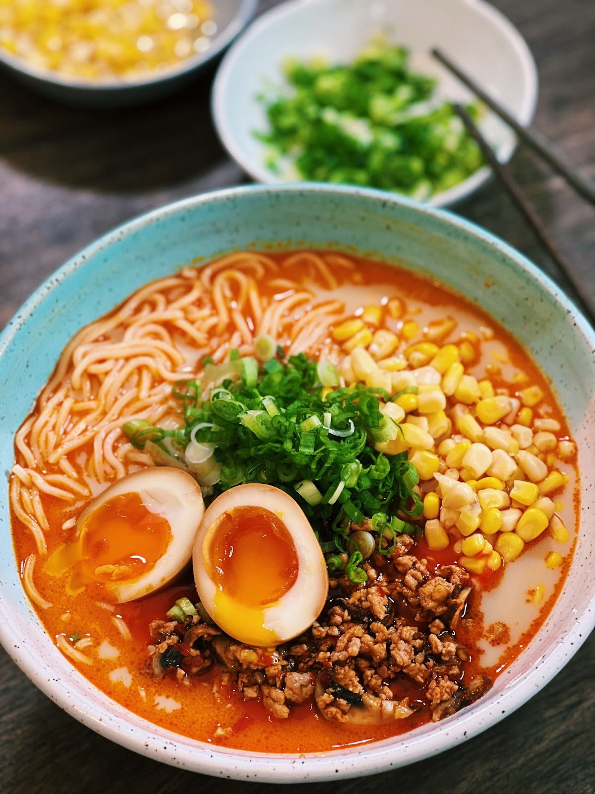

Vegan Mac & Cheese

If I told you that you could make a delicious bowl of Ramen from scratch in only 20 minutes, would you give it a try?
Super easy Creamy Miso Ramen that takes less than 20 minutes, perfect for any weeknight dinner!
This ramen recipe can easily be vegetarian-friendly by swapping the ground pork/chicken with chopped shiitake mushroom or beyond meat substitute.
Ingredients:
- 2 cups of sliced mushroom
- 1.5 tbsp minced garlic
- 1 tbsp grated ginger
- 1.5 tbsp doubanjiang
- 1.5 tbsp miso paste
- 2 tbsp soy sauce
- 2 cups dashi stock (or Better than Bouillon stock)
- 2.5 cups unsweetened soy milk
- and whatever other toppings you like, such as soy sauce eggs or green scallions
Directions:
- In a pot, add in oil and turn the heat to medium-high. Once the pot is hot, saute ground pork, chicken, or shiitake mushroom for 2-3 minutes.
- Add in sliced mushroom, minced garlic, grated ginger, soy sauce, la doubanjiang, and satue together for 2-3 minutes.
- Remove half of the pork and mushroom to use a topping later.
- Pour in unsweeten soy milk, dashi stock, and miso paste. And let is simmer for another 4-5 minutes.
- Assemble the ramen, by adding noodle, pour on the stock, and top with any topping of your choice.